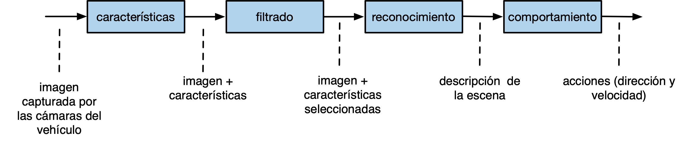

Tema 2: Programación funcional¶
El paradigma de Programación Funcional¶
Pasado y presente del paradigma funcional¶
Definición y características
En una definición muy breve y concisa la programación funcional define un programa de la siguiente forma:
Definición de programa funcional
En programación funcional un programa es un conjunto de funciones matemáticas que convierten unas entradas en unas salidas, sin ningún estado interno y ningún efecto lateral.
Hablaremos más adelante de la no existencia de estado interno (variables en las que se guardan y se modifican valores) y de la ausencia de efectos laterales. Avancemos que estas son también características de la programación declarativa (frente a la programación tradicional imperativa que es la que se utiliza en lenguajes como C o Java). En este sentido, la programación funcional es un tipo concreto de programación declarativa.
Las características principales del paradigma funcional son:
- Definiciones de funciones matemáticas puras, sin estado interno ni efectos laterales
- Valores inmutables
- Uso profuso de la recursión en la definición de las funciones
- Uso de listas como estructuras de datos fundamentales
- Funciones como tipos de datos primitivos: expresiones lambda y funciones de orden superior
Explicaremos estas propiedades a continuación.
Orígenes históricos
En los años 30, junto con la máquina de Turing, se propusieron distintos modelos computacionales equivalentes que formalizaban el concepto de algoritmo. Uno de estos modelos fue el denominado Cálculo lambda propuesto por Alonzo Church en los años 30 y basado en la evaluación de expresiones matemáticas. En este formalismo los algoritmos se expresan mediante funciones matemáticas en las que puede ser usada la recursión. Una función matemática recibe parámetros de entrada y devuelve un valor. La evaluación de la función se realiza evaluando sus expresiones matemáticas mediante la sustitución de los parámetros formales por los valores reales que se utilizan en la invocación (el denominado modelo de sustitución que veremos más adelante).
El cálculo lambda es un formalismo matemático, basado en operaciones abstractas. Dos décadas después, cuando los primeros computadores electrónicos estaban empezando a utilizarse en grandes empresas y en universidades, este formalismo dio origen a algo mucho más tangible y práctico: un lenguaje de alto nivel, mucho más expresivo que el ensamblador, con el que expresar operaciones y funciones que pueden ser definidas y evaluadas en el computador, el lenguaje de programación Lisp.
Historia y características del Lisp
- Lisp es el primer lenguaje de programación de alto nivel basado en el paradigma funcional.
- Creado en 1958 por John McCarthy.
- Lisp fue en su época un lenguaje revolucionario que introdujo nuevos conceptos de programación no existentes entonces: funciones como objetos primitivos, funciones de orden superior, polimorfismo, listas, recursión, símbolos, homogeneidad de datos y programas, bucle REPL (Read-Eval-Print Loop)
- La herencia del Lisp llega a lenguajes derivados de él (Scheme, Golden Common Lisp) y a nuevos lenguajes de paradigmas no estrictamente funcionales, como C#, Python, Ruby, Objective-C o Scala.
Lisp fue el primer lenguaje de programación interpretado, con muchas características dinámicas que se ejecutan en tiempo de ejecución (run-time). Entre estas características podemos destacar la gestión de la memoria (creación y destrucción automática de memoria reservada para datos), la detección de excepciones y errores en tiempo de ejecución o la creación en tiempo de ejecución de funciones anónimas (expresiones lambda). Todas estas características se ejecutan mediante un sistema de tiempo de ejecución (rutime system) presente en la ejecución de los programas. A partir del Lisp muchos otros lenguajes han usado estas características de interpretación o de sistemas de tiempo de ejecución. Por ejemplo, lenguajes como BASIC, Python, Ruby o JavaScript son lenguajes interpretados. Y lenguajes como Java o C# tienen una avanzada plataforma de tiempo de ejecución con soporte para la gestión de la memoria dinámica (recolección de basura, garbage collection) o la compilación just in time.
Lisp no es un lenguaje exclusivamente funcional. Lisp se diseñó con el objetivo de ser un lenguaje de alto nivel capaz de resolver problemas prácticos de Inteligencia Artificial, no con la idea de ser un lenguaje formal basado un único modelo de computación. Por ello en Lisp (y en Scheme) existen primitivas que se salen del paradigma funcional puro y permiten programar de formar imperativa (no declarativa), usando mutación de estado y pasos de ejecución.
Sin embargo, durante la primera parte de la asignatura en la que estudiaremos la programación funcional, no utilizaremos las instrucciones imperativas de Scheme sino que escribiremos código exclusivamente funcional.
Lenguajes de programación funcional
En los años 60 la programación funcional definida por el Lisp fue dominante en departamentos de investigación en Inteligencia Artificial (MIT por ejemplo). En los años 70, 80 y 90 se fue relegando cada vez más a los nichos académicos y de investigación; en la empresa se impusieron los lenguajes imperativos y orientados a objetos.
En la primera década del 2000 han aparecido lenguajes que evolucionan de Lisp y que resaltan sus aspectos funcionales, aunque actualizando su sintaxis. Destacamos entre ellos:
También hay una tendencia desde mediados de la década de 2000 de incluir aspectos funcionales como las expresiones lambda o las funciones de orden superior en lenguajes imperativos orientados a objetos, dando lugar a lenguajes multi-paradigma:
Por último, en la década del 2010 también se ha hecho popular un lenguaje exclusivamente funcional como Haskell. Este lenguaje, a diferencia de Scheme y de otros lenguajes multi-paradigma, no tienen ningún elemento imperativo y consigue que todas sus expresiones sean puramente funcionales.
Aplicaciones prácticas de la programación funcional
En la actualidad el paradigma funcional es un paradigma de moda, como se puede comprobar observando la cantidad de artículos, charlas y blogs en los que se habla de él, así como la cantidad de lenguajes que están aplicando sus conceptos. Por ejemplo, solo como muestra, a continuación puedes encontrar algunos enlaces a charlas y artículos interesantes publicados recientemente sobre programación funcional:
- Lupo Montero - Introducción a la programación funcional en JavaScript (Blog)
- Andrés Marzal - Por qué deberías aprender programación funcional ya mismo (Charla en YouTube)
- Mary Rose Cook - A practical introduction to functional programming (Blog)
- Ben Christensen - Functional Reactive Programming in the Netflix API (Charla en InfoQ)
El auge reciente de estos lenguajes y del paradigma funcional se debe a varios factores, entre ellos que es un paradigma que facilita:
- la programación de sistemas concurrentes, con múltiples hilos de ejecución o con múltiples computadores ejecutando procesos conectados concurrentes.
- la definición y composición de múltiples operaciones sobre streams de forma muy concisa y compacta, aplicable a la programación de sistemas distribuidos en Internet.
- la programación interactiva y evolutiva.
Programación de sistemas concurrentes
Veremos más adelante que una de las características principales de la programación funcional es que no se usa la mutación (no se modifican los valores asignados a variables ni parámetros). Esta propiedad lo hace un paradigma excelente para implementar programas concurrentes, en los que existen múltiples hilos de ejecución. La programación de sistemas concurrentes es muy complicada con el paradigma imperativo tradicional, en el que la modificación del estado de una variable compartida por más de un hilo puede provocar condiciones de carrera y errores difícilmente localizables y reproducibles.
Como dice Bartosz Milewski, investigador y teórico de ciencia de computación, en su respuesta en Quora a la pregunta ¿por qué a los ingenieros de software les gusta la programación funcional?:
Bartosz Milewski: ¿Por qué es popular la programación funcional?
Porque es la única forma práctica de escribir programas concurrentes. Intentar escribir programas concurrentes en lenguajes imperativos, no sólo es difícil, sino que lleva a bugs que son muy difíciles de descubrir, reproducir y arreglar. En los lenguajes imperativos y, en particular, en los lenguajes orientados a objetos se ocultan las mutaciones y se comparten datos sin darse cuenta, por lo que son extremadamente propensos a los errores de concurrencia producidos por las condiciones de carrera.
Definición y composición de operaciones sobre streams
El paradigma funcional ha originado un estilo de programación sobre
streams de datos, en el que se concatenan operaciones como filter
o map para definir de forma sencilla procesos y transformaciones
asíncronas aplicables a los elementos del stream. Este estilo de
programación ha hecho posible nuevas ideas de programación, como la
programación reactiva, basada en eventos, o los futuros o
promesas muy utilizados en lenguajes muy populares como JavaScript
para realizar peticiones asíncronas a servicios web.
Por ejemplo, en el artículo Exploring the virtues of microservices with Play and Akka se explica con detalle las ventajas del uso de lenguajes y primitivas para trabajar con sistemas asíncronos basados en eventos en servicios como Tumblr o Netflix.
Otro ejemplo es el uso de Scala en Tumblr con el que se consigue crear código que no tiene estado compartido y que es fácilmente paralelizable entre los más de 800 servidores necesarios para atender picos de más de 40.000 peticiones por segundo:
Uso de Scala en Tumblr
Scala promueve que no haya estado compartido. El estado mutable se evita usando sentencias en Scala. No se usan máquinas de estado de larga duración. El estado se saca de la base de datos, se usa, y se escribe de nuevo en la base de datos. La ventaja principal es que los desarrolladores no tienen que preocuparse sobre hilos o bloqueos.
Programación evolutiva
En la metodología de programación denominada programación evolutiva o iterativa los programas complejos se construyen a base de ir definiendo y probando elementos computacionales cada vez más complicados. Los lenguajes de programación funcional encajan perfectamente en esta forma de construir programas.
Como Abelson y Sussman comentan en el libro Structure and Implementation of Computer Programs (SICP):
Abelson y Sussman sobre la programación incremental
En general, los objetos computacionales pueden tener estructuras muy complejas, y sería extremadamente inconveniente tener que recordar y repetir sus detalles cada vez que queremos usarlas. En lugar de ello, se construyen programas complejos componiendo, paso a paso, objetos computacionales de creciente complejidad.
El intérprete hace esta construcción paso-a-paso de los programas particularmente conveniente porque las asociaciones nombre-objeto se pueden crear de forma incremental en interacciones sucesivas. Esta característica favorece el desarrollo y prueba incremental de programas, y es en gran medida responsable del hecho de que un programa Lisp consiste normalmente de un gran número de procedimientos relativamente simples.
No hay que confundir una metodología de programación con un paradigma de programación. Una metodología de programación proporciona sugerencias sobre cómo debemos diseñar, desarrollar y mantener una aplicación que va a ser usada por usuarios finales. La programación funcional se puede usar con múltiples metodologías de programación, debido a que los programas resultantes son muy claros, expresivos y fáciles de probar.
Programación declarativa vs. imperativa¶
Hemos dicho que la programación funcional es un estilo de programación declarativa, frente a la programación tradicional de los lenguajes denominados imperativos. Vamos a explicar esto un poco más.
Programación declarativa
Empecemos con lo que conocemos todos: un programa imperativo. Se trata de un conjunto de instrucciones que se ejecutan una tras otra (pasos de ejecución) de forma secuencial. En la ejecución de estas instrucciones se van cambiando los valores de las variables y, dependiendo de estos valores, se modifica el flujo de control de la ejecución del programa.
Para entender el funcionamiento de un programa imperativo debemos imaginar toda la evolución del programa, los pasos que se ejecutan y cuál es el flujo de control en función de los cambios de los valores en las variables.
En la programación declarativa, sin embargo, utilizamos un paradigma totalmente distinto. Hablamos de programación declarativa para referirnos a lenguajes de programación (o sentencias de código) en los que se declaran los valores, objetivos o características de los elementos del programa y en cuya ejecución no existe mutación (modificación de valores de variables) ni secuencias de pasos de ejecución.
De esta forma, la ejecución de un programa declarativo tiene que ver más con algún modelo formal o matemático que con un programa tradicional imperativo. Define un conjunto de reglas y definiciones de estilo matemático.
Un ejemplo claro de programación declarativa es una hoja de cálculo. Las celdas contiene valores o expresiones matemáticas que se actualizan automáticamente cuando cambiamos los valores de entrada. La relación entre valores y resultados es totalmente matemática y para su cálculo no tenemos que tener en cuenta pasos de ejecución. Evidente, por debajo de la hoja de cálculo existe un programa que realiza el su cálculo de la hoja, pero cuando estamos usándola no nos preocupa esa implementación. Podemos no preocuparnos de ella y usar únicamente el modelo matemático definido en la hoja.
Otro ejemplo muy actual de programación declarativa es SwiftUI, el nuevo API creado por Apple para definir las interfaces de usuario de las aplicaciones iOS.

En el código de la imagen vemos una descripción de cómo está definida la aplicación: una lista de lugares (landmarks) apilada verticalmente. Para cada lugar se define su imagen, su texto, y una estrella si el lugar es favorito.
El código es declarativo porque no hay pasos de ejecución para definir la interfaz. No existe un bucle que va añadiendo elementos a la interfaz. Vemos una declaración de cómo la interfaz va estar definida. El compilador del lenguaje y el API son los responsables de construir esa declaración y mostrar la interfaz tal y como nosotros queremos.
La programación funcional utiliza un estilo de programación declarativo. Definimos funciones en las que se realizan unas operaciones sobre unos parámetros de entrada y se devuelve un valor. Veremos que estas operaciones se realizan sin definir valores intermedios, ni variables auxiliares, ni pasos de ejecución. Únicamente se van componiendo llamadas a funciones auxiliares que construyen el valor resultante.
El siguiente ejemplo es una declaración en Scheme de una función que toma como entrada un número y devuelve su cuadrado:
1 2 | (define (cuadrado x) (* x x)) |
En el cuerpo de la función cuadrado vemos que no se utiliza ninguna
variable auxiliar, sino que únicamente se llama a la función *
(multiplicación) pasando el valor de x. El valor resultante es el
que se devuelve.
Por ejemplo, si llamamos a la función pasándole el parámetro 4
devuelve el resultado de multiplicar 4 por si mismo, 16.
1 | (cuadrado 4) ; ⇒ 16 |
La programación declarativa no es exclusiva de los lenguajes funcionales. Existen muchos lenguajes no funcionales con características declarativas. Por ejemplo Prolog, en el que un programa se define como un conjunto de reglas lógicas y su ejecución realiza una deducción lógica matemática que devuelve un resultado. En dicha ejecución no son relevantes los pasos internos que realiza el sistema sino las relaciones lógicas entre los datos y los resultados finales.
Composición de funciones
Una idea fundamental de la programación funcional es la composición de funciones que transforman unos datos de entrada en otros de salida. Es una idea muy actual, porque es la forma en la que están planteados muchos algoritmos de procesamiento de datos en inteligencia artificial.
Por ejemplo, podemos representar de la siguiente forma el algoritmo que maneja un vehículo autónomo:

Las cajas representa funciones que transforman los datos de entrada (imágenes tomadas por las cámaras del vehículo) en los datos de salida (acciones a realizar sobre la dirección y el motor del vehículo). Las funciones intermedias representan transformaciones que se realizan sobre los datos de entrada y obtienen los datos de salida.
En un lenguaje de programación funcional como Scheme el diagrama anterior se escribiría con el siguiente código:
1 2 3 4 5 | (define (conduce-vehiculo imagenes) (obten-acciones (reconoce (filtra (obten-caracteristicas imagenes))))) |
Veremos más adelante que las expresiones en Scheme se evalúan de dentro a fuera y que tienen notación prefija. El resultado de cada función constituye la entrada de la siguiente.
En el caso de la función conduce-vehiculo primero se obtienen las
características de las imágenes, después se filtran, después se
reconoce la escena y, por último, se obtienen las acciones para
conducir el vehículo.
Programación imperativa
Repasemos un algunas características propias de la programación imperativa que no existen en la programación funcional. Son características a las que estamos muy habituados porque son propias de los lenguajes más populares y con los que hemos aprendido a programar (C, C++, Java, python, etc.)
- Pasos de ejecución
- Mutación
- Efectos laterales
- Estado local mutable en las funciones
Veremos que, aunque parece imposible, es posible programar sin utilizar estas características. Lo demuestran lenguajes de programación funcional como Haskell, Clojure o el propio Scheme.
Pasos de ejecución
Una de las características básicas de la programación imperativa es la utilización de pasos de ejecución. Por ejemplo, en C podemos realizar los siguientes pasos de ejecución:
1 2 3 4 | int a = cuadrado(8); int b = doble(a); int c = cuadrado(b); return c |
O, por ejemplo, si queremos filtrar y procesar una lista de pedidos en Swift podemos hacerlo en dos sentencias:
1 2 3 | filtrados = filtra(pedidos); procesados = procesa(filtrados); return procesados; |
Sin embargo, en programación funcional (por ejemplo, Scheme) no existen pasos de ejecución separados por sentencias. Como hemos visto antes, la forma típica de expresar las instrucciones anteriores es componer todas las operaciones en una única instrucción:
1 | (cuadrado (doble (cuadrado 8))) ; ⇒ 16384 |
El segundo ejemplo lo podemos componer de la misma forma:
1 | (procesa (filtra pedidos)) |
Mutación
En los lenguajes imperativos es común modificar el valor de las variables en los pasos de ejecución:
1 2 | int x = 10; int x = x + 1; |
La expresión x = x + 1 es una expresión de
asignación
que modifica el valor anterior de una variable por un nuevo valor. El
estado de las variables (su valor) cambia con la ejecución de los
pasos del programa.
A esta asignación que modifica un valor ya existente se le denomina asignación destructiva o mutación.
En programación imperativa también se puede modificar (mutar) el valor de componentes de estructuras de datos, como posiciones de un array, de una lista o de un diccionario.
En programación funcional, por contra, las definiciones son inmutables, y una vez asignado un valor a un identificador no se puede modificar éste. En programación funcional no existe sentencia de asignación que pueda modificar un valor ya definido. Se entienden las variables como variables matemáticas, no como referencias a una posiciones de memoria que puede ser modificada.
Por ejemplo, la forma especial define en Scheme crea un nuevo
identificador y le da el valor definido de forma permanente. Si
escribimos el siguiente código en un programa en Scheme R6RS:
1 2 3 4 | #lang racket (define a 12) (define a 200) |
tendremos el siguiente error:
1 | module: identifier already defined in: a |
Nota
En el intérprete REPL del DrRacket sí que podemos definir más de una vez la misma función o identificador. Se ha diseñado así para facilitar el uso del intérprete para la prueba de expresiones en Scheme.
En los lenguajes de programación imperativos es habitual introducir también sentencias declarativas. Por ejemplo, en el siguiente código Java las líneas 1 y 3 las podríamos considerar declarativas y las 2 y 4 imperativas:
1 2 3 4 | 1. int x = 1; 2. x = x+1; 3. int y = x+1; 4. y = x; |
Mutación y efectos laterales
En programación imperativa es habitual también trabajar con referencias y hacer que más de un identificador referencie el mismo valor. Esto produce la posibilidad de que la mutación del valor a través de uno de los identificadores produzca un efecto lateral (side effect en inglés) en el que el valor de un identificador cambia sin ejecutar ninguna expresión en la que se utilice explícitamente el propio identificador.
Por ejemplo, en la mayoría de lenguajes orientados a objetos los identificadores guardan referencias a objetos. De forma que si asignamos un objeto a más de un identificador, todos los identificadores están accediendo al mismo objeto. Si mutamos algún valor del objeto a través de un identificador provocamos un efecto lateral en los otros identificadores.
Por ejemplo, lo siguiente es un ejemplo de una mutación en programación imperativa, en la que se modifican los atributos de un objeto en Java:
1 2 3 4 | Point2D p1 = new Point2D(3.0, 2.0); // creamos un punto 2D con coordX=3.0 y coordY=2.0 p1.getCoordX(); // la coord x de p2 es 3.0 p1.setCoordX(10.0); p1.getCoordX(); // la coord x de p1 es 10.0 |
Si el objeto está asignado a más de una variable tendremos el efecto lateral (side effect) en el que el dato guardado en una variable cambia después de una sentencia en la que no se ha usado esa variable:
1 2 3 4 5 | Point2D p1 = new Point2D(3.0, 2.0); // la coord x de p1 es 3.0 p1.getCoordX(); // la coord x de p1 es 3.0 Point2D p2 = p1; p2.setCoordX(10.0); p1.getCoordX(); // la coord x de p1 es 10.0, sin que ninguna sentencia haya modificado directamente p1 |
El mismo ejemplo anterior, en C:
1 2 3 4 5 6 7 8 9 10 | typedef struct { float x; float y; }TPunto; TPunto p1 = {3.0, 2.0}; printf("Coordenada x: %f", p1.x); // 3.0 TPunto *p2 = &p1; p2->x = 10.0; printf("Coordenada x: %f", p1.x); // 10.0 Efecto lateral |
Los efectos laterales son los responsables de muchos bugs y hay que ser muy consciente de su uso. Son especialmente complicados de depurar los bugs debidos a efectos laterales en programas concurrentes con múltiples hilos de ejecución, en los que varios hilos pueden acceder a las mismas referencias y provocar condiciones de carrera.
Por otro lado, también existen situaciones en las que su utilización permite ganar mucha eficiencia porque podemos definir estructuras de datos en el que los valores son compartidos por varias referencias y modificando un único valor se actualizan de forma instantánea esas referencias.
En los lenguajes en los que no existe la mutación no se producen efectos laterales, ya que no es posible modificar el valor de una variable una vez establecido. Los programas que escribamos en estos lenguajes van a estar libres de este tipo de bugs y van a poder ser ejecutado sin problemas en hilos de ejecución concurrente.
Por otro lado, la ausencia de mutación hace que sean algo más costosas ciertas operaciones, como la construcción de estructuras de datos nuevas a partir de estructuras ya existentes. Veremos, por ejemplo, que la única forma de añadir un elemento al final de una lista será construir una lista nueva con todos los elementos de la lista original y el nuevo elemento. Esta operación tiene un coste lineal con el número de elementos de la lista. Sin embargo, en una lista en la que pudiéramos utilizar la mutación podríamos implementar esta operación con coste constante.
Estado local mutable
Otra característica de la programación imperativa es lo que se denomina estado local mutable en funciones, procedimientos o métodos. Se trata la posibilidad de que una invocación a un método o una función modifique un cierto estado, de forma que la siguiente invocación devuelva un valor distinto. Es una característica básica de la programación orientada a objetos, donde los objetos guardan valores que se modifican con la invocaciones a sus métodos.
Por ejemplo, en Java, podemos definir un contador que incrementa su valor:
1 2 3 4 5 6 7 8 9 10 11 12 | public class Contador { int c; public Contador(int valorInicial) { c = valorInicial; } public int valor() { c++; return c; } } |
Cada llamada al método valor() devolverá un valor distinto:
1 2 3 4 | Contador cont = new Contador(10); cont.valor(); // 11 cont.valor(); // 12 cont.valor(); // 13 |
También se pueden definir funciones con estado local mutable en C:
1 2 3 4 5 6 | int function contador () { static int c = 0; c++; return c; } |
Cada llamada a la función contador() devolverá un valor distinto:
1 2 3 | contador() ;; 1 contador() ;; 2 contador() ;; 3 |
Por el contrario, los lenguajes funcionales tienen la propiedad de transparencia referencial: es posible sustituir cualquier aparición de una expresión por su resultado sin que cambia el resultado final del programa. Dicho de otra forma, en programación funcional, una función siempre devuelve el mismo valor cuando se le llama con los mismos parámetros. Las funciones no modifican ningún estado, no acceden a ninguna variable ni objeto global y modifican su valor.
Resumen
Un resumen de las características fundamentales de la programación declarativa frente a la programación imperativa. En los siguientes apartados explicaremos más estas características.
Características de la programación declarativa
- Variable = nombre dado a un valor (declaración)
- No existe asignación ni cambio de estado
- No existe mutación, se cumple la transferencia referencial: dentro de un mismo ámbito todas las ocurrencias de una variable y las llamadas a funciones devuelven el mismo valor
Características de la programación imperativa
- Variable = nombre de una zona de memoria
- Asignación
- Referencias
- Pasos de ejecución
Evaluación de expresiones y definición de funciones¶
En la asignatura usaremos Scheme como primer lenguaje en el que exploraremos la programación funcional.
En el seminario de Scheme que se imparte en prácticas se estudiará en más profundidad los conceptos más importantes del lenguaje: tipos de datos, operadores, estructuras de control, intérprete, etc.
Evaluación de expresiones
Empezamos este apartado viendo cómo se definen y evalúan expresiones Scheme. Y después veremos cómo construir nuevas funciones.
Scheme es un lenguaje que viene del Lisp. Una de sus características principales es que las expresiones se construyen utilizando paréntesis.
Ejemplos de expresiones en Scheme, junto con el resultado de su ejecución:
1 2 3 4 5 | 2 ; ⇒ 2 (+ 2 3) ; ⇒ 5 (+) ; ⇒ 0 (+ 2 4 5 6) ; ⇒ 17 (+ (* 2 3) (- 3 1)) ; ⇒ 8 |
En programación funcional en lugar de decir "ejecutar una expresión" se dice "evaluar una expresión", para reforzar la idea de que se tratan de expresiones matemáticas que siempre devuelven uno y sólo un resultado.
Las expresiones se definen con una notación prefija: el primer elemento después del paréntesis de apertura es el operador de la expresión y el resto de elementos (hasta el paréntesis de cierre) son sus operandos.
-
Por ejemplo, en la expresión
(+ 2 4 5 6)el operador es el símbolo+que representa función suma y los operandos son los números 2, 4, 5 y 6. -
Puede haber expresiones que no tengan operandos, como el ejemplo
(+), cuya evaluación devuelve 0.
Una idea fundamental de Lisp y Scheme es que los paréntesis se evalúan de dentro a fuera. Por ejemplo, la expresión
1 | (+ (* 2 3) (- 3 (/ 12 3))) |
que devuelve 5, se evalúa así:
1 2 3 4 5 | (+ (* 2 3) (- 3 (/ 12 3))) ⇒ (+ 6 (- 3 (/ 12 3))) ⇒ (+ 6 (- 3 4)) ⇒ (+ 6 -1) ⇒ 5 |
La evaluación de cada expresión devuelve un valor que se utiliza para continuar calculando la expresión exterior. En el caso anterior
- primero se evalúa la expresión
(* 2 3)que devuelve 6, - después se evalúa
(/ 12 3)que devuelve 4, - después se evalúa
(- 3 4)que devuelve -1 - y por último se evalúa
(+ 6 -1)que devuelve 5
Cuando se evalúa una expresión en el intérprete de Scheme el resultado aparece en la siguiente línea.
Definición de funciones
En programación funcional las funciones son similares a las funciones matemáticas: reciben parámetros y devuelven siempre un único resultado de operar con esos parámetros.
Por ejemplo, podemos definir la función (cuadrado x) que devuelve el
cuadrado de un número que pasamos como parámetro:
1 2 | (define (cuadrado x) (* x x)) |
El cuerpo de la función es una expresión que se evaluará con el valor
que se pase como parámetro. En el caso anterior la expresión es (* x
x) y multiplicará el parámetro por si mismo.
Hay que hacer notar que en Scheme no existe la palabra clave return,
sino que las funciones siempre se definen con una única expresión cuya
evaluación es el resultado que se devuelve.
Una vez definida la función cuadrado podemos usarla de la misma
forma que las funciones primitivas de Scheme:
1 2 | (cuadrado 10) ; ⇒ 100 (cuadrado (+ 10 (cuadrado (+ 2 4)))) ; ⇒ 2116 |
La evaluación de la última expresión se hace de la siguiente forma:
1 2 3 4 5 | (cuadrado (+ 10 (cuadrado (+ 2 4)))) ⇒ (cuadrado (+ 10 (cuadrado 6))) ⇒ (cuadrado (+ 10 36)) ⇒ (cuadrado 46) ⇒ 2116 |
Definición de funciones auxiliares
Las funciones definidas se pueden utilizar a su vez para construir otras funciones.
Lo habitual en programación funcional es definir funciones muy pequeñas e ir construyendo funciones cada vez de mayor nivel usando las anteriores.
Ejemplo: tiempo de impacto
Por ejemplo, supongamos que estamos programando un juego de guerra de barcos y submarinos, en el que utilizamos las coordenadas del plano para situar todos los elementos de nuestra flota.
Supongamos que necesitamos calcular el tiempo que tarda un torpedo en
llegar desde una posición (x1, y1) a otra (x2, y2). Suponemos que
la velocidad del torpedo es otro parámetro v.
¿Cómo calcularíamos este tiempo de impacto?
La forma menos correcta de hacerlo es definir todo el cálculo en una única expresión. Como en programación funcional las funciones deben definirse con una única expresión deberíamos poner todo el cálculo en forma de expresiones anidadas, unas dentro de otras. Eso crearía una función que calcularía bien el resultado, pero que sería muy difícil de leer y entender para un compañero (o para nosotros mismos, cuando pasen unos meses):
1 2 3 4 5 6 7 8 9 10 11 12 | ; ; Definición incorrecta: muy poco legible ; ; La función tiempo-impacto devuelve el tiempo que tarda ; en llegar un torpedo a la velocidad v desde la posición ; (x1, y1) a la posición (x2, y2) ; (define (tiempo-impacto x1 y1 x2 y2 v) (/ (sqrt (+ (* (- x2 x1) (- x2 x1)) (* (- y2 y1) (- y2 y1)))) v)) |
La función anterior haría bien el cálculo pero sería muy complicada de modificar y de entender.
La forma más correcta de definir la función sería usando varias funciones auxiliares. Fíjate que es muy importante también poner los nombres correctos a cada función, para entender qué hace. Scheme es un lenguaje débilmente tipado y no tenemos la ayuda de los tipos que nos dan más contexto de qué es cada parámetro y qué devuelve la función.
1 2 3 4 5 6 7 8 9 10 11 12 13 14 15 16 17 18 19 20 21 22 23 24 25 26 27 28 29 30 31 32 33 34 | ; Definición correcta, modular y legible de la función tiempo-impacto ; ; La función 'cuadrado' devuelve el cuadrado de un número ; (define (cuadrado x) (* x x)) ; ; La función 'distancia' devuelve la distancia entre dos ; coordenadas (x1, y1) y (x2, y2) ; (define (distancia x1 y1 x2 y2) (sqrt (+ (cuadrado (- x2 x1)) (cuadrado (- y2 y1))))) ; ; La función 'tiempo' devuelve el tiempo que ; tarda en recorrer un móvil una distancia d a un velocidad v ; (define (tiempo distancia velocidad) (/ distancia velocidad)) ; ; La función 'tiempo-impacto' devuelve el tiempo que tarda ; en llegar un torpedo a la velocidad v desde la posición ; (x1, y1) a la posición (x2, y2) ; (define (tiempo-impacto x1 y1 x2 y2 velocidad) (tiempo (distancia x1 y1 x2 y2) velocidad)) |
En esta segunda versión definimos más funciones, pero cada una es
mucho más legible. Además las funciones como cuadrado, distancia o
tiempo las vamos a poder reutilizar para otros cálculos.
Funciones puras
A diferencia de lo que hemos visto en programación imperativa, en programación funcional no es posible definir funciones con estado local. Las funciones que se definen son funciones matemáticas puras, que cumplen las siguientes condiciones:
- No modifican los parámetros que se les pasa
- Devuelven un único resultado
- No tienen estado local ni el resultado depende de un estado exterior mutable
Esta última propiedad es muy importante y quiere decir que la función siempre devuelve el mismo valor cuando se le pasan los mismos parámetros.
Las funciones puras son muy fáciles de entender porque no es necesario tener en cuenta ningún contexto a la hora de describir su funcionamiento. El valor devuelto únicamente depende de los parámetros de entrada.
Por ejemplo, funciones matemáticas como suma, resta, cuadrado, sin, cos, etc. cumplen esta propiedad.
Modelo de computación de sustitución¶
Un modelo computacional es un formalismo (conjunto de reglas) que definen el funcionamiento de un programa. En el caso de los lenguajes funcionales basados en la evaluación de expresiones, el modelo computacional define cuál será el resultado de evaluar una expresión.
El modelo de sustitución es un modelo muy sencillo que permite definir la semántica de la evaluación de expresiones en lenguajes funcionales como Scheme. Se basa en una versión simplificada de la regla de reducción del cálculo lambda.
Es un modelo basado en la reescritura de unos términos por otros. Aunque se trata de un modelo abstracto, sería posible escribir un intérprete que, basándose en este modelo, evalúe expresiones funcionales.
Supongamos un conjunto de definiciones en Scheme:
1 2 3 4 5 6 7 8 9 10 | (define (doble x) (+ x x)) (define (cuadrado y) (* y y)) (define (f z) (+ (cuadrado (doble z)) 1)) (define a 2) |
Supongamos que, una vez realizadas esas definiciones, se evalúa la siguiente expresión:
1 | (f (+ a 1)) |
¿Cuál será su resultado? Si lo hacemos de forma intuitiva podemos
pensar que 37. Si lo comprobamos en el intérprete de Scheme veremos
que devuelve 37. ¿Hemos seguido algunas reglas específicas? ¿Qué
reglas son las que sigue el intérprete? ¿Podríamos implementar
nosotros un intérprete similar? Sí, usando las reglas del modelo de
sustitución.
El modelo de sustitución define cuatro reglas sencillas para evaluar una expresión. Llamemos a la expresión e. Las reglas son las siguientes:
- Si e es un valor primitivo (por ejemplo, un número), devolvemos ese mismo valor.
- Si e es un identificador, devolvemos su valor asociado con un
define(se lanzará un error si no existe ese valor). - Si e es una expresión del tipo (f arg1 ... argn), donde f es
el nombre de una función primitiva (
+,-, ...), evaluamos uno a uno los argumentos arg1 ... argn (con estas mismas reglas) y evaluamos la función primitiva con los resultados.
La regla 4 tiene dos variantes, dependiendo del orden de evaluación que utilizamos.
Orden aplicativo
- Si e es una expresión del tipo (f arg1 ... argn), donde f es
el nombre de una función definida con un
define, tenemos que evaluar primero los argumentos arg1 ... argn y después sustituir f por su cuerpo, reemplazando cada parámetro formal de la función por el correspondiente argumento evaluado. Después evaluaremos la expresión resultante usando estas mismas reglas.
Orden normal
- Si e es una expresión del tipo (f arg1 ... argn), donde f es
el nombre de una función definida con un
define, tenemos que sustituir f por su cuerpo, reemplazando cada parámetro formal de la función por el correspondiente argumento sin evaluar. Después evaluar la expresión resultante usando estas mismas reglas.
En el orden aplicativo se realizan las evaluaciones antes de realizar las sustituciones, lo que define una evaluación de dentro a fuera de los paréntesis. Cuando se llega a una expresión primitiva se evalúa.
En el orden normal se realizan todas las sustituciones hasta que se tiene una larga expresión formada por expresiones primitivas; se evalúa entonces.
Ambas formas de evaluación darán el mismo resultado en programación funcional. Scheme utiliza el orden aplicativo.
Ejemplo 1
Vamos a empezar con un ejemplo sencillo para comprobar cómo se evalúa una misma expresión utilizando ambos modelos de sustitución. Supongamos las siguientes definiciones:
1 2 3 4 5 6 7 | (define (doble x) (+ x x)) (define (cuadrado y) (* y y)) (define a 2) |
Queremos evaluar la siguiente expresión:
1 | (doble (cuadrado a)) |
La evaluación utilizando el modelo de sustitución aplicativo, usando paso a paso las reglas anteriores, es la siguiente (en cada línea se indica entre paréntesis la regla usada):
1 2 3 4 5 6 | (doble (cuadrado a)) ⇒ ; Sustituimos a por su valor (R2) (doble (cuadrado 2)) ⇒ ; Sustitumos cuadrado por su cuerpo (R4) (doble (* 2 2)) ⇒ ; Evaluamos (* 2 2) (R3) (doble 4) ⇒ ; Sustituimos doble por su cuerpo (R4) (+ 4 4) ⇒ ; Evaluamos (+ 4 4) (R3) 8 |
Podemos comprobar que en el modelo aplicativo se intercalan las sustituciones de una función por su cuerpo (regla 4) y las evaluaciones de expresiones (regla 3).
Por el contrario, la evaluación usando el modelo de sustitución normal es:
1 2 3 4 5 6 7 | (doble (cuadrado a)) ⇒ ; Sustituimos doble por su cuerpo (R4) (+ (cuadrado a) (cuadrado a) ⇒ ; Sustituimos cuadrado por su cuerpo (R4) (+ (* a a) (* a a) ⇒ ; Sustitumos a por su valor (R2) (+ (* 2 2) (* 2 2) ⇒ ; Evaluamos (* 2 2) (R3) (+ 4 (* 2 2)) ⇒ ; Evaluamos (* 2 2) (R3) (+ 4 4) ⇒ ; Evaluamos (+ 4 4) (R3) 8 |
Al usar este modelo de evaluación primero se realizan todas las sustituciones (regla 4) y después todas las evaluaciones (regla 3).
Ejemplo 2
Veamos la evaluación del ejemplo algo más complicado que hemos planteado al comienzo:
1 2 3 4 5 6 7 8 9 10 | (define (doble x) (+ x x)) (define (cuadrado y) (* y y)) (define (f z) (+ (cuadrado (doble z)) 1)) (define a 2) |
Expresión a evaluar:
1 | (f (+ a 1)) |
Resultado de la evaluación usando el modelo de sustitución aplicativo:
1 2 3 4 5 6 7 8 9 10 | (f (+ a 1)) ⇒ ; Para evaluar f, evaluamos primero su argumento (+ a 1) (R4)
; y sustituimos a por 2 (R2)
(f (+ 2 1)) ⇒ ; Evaluamos (+ 2 1) (R3)
(f 3) ⇒ ; (R4)
(+ (cuadrado (doble 3)) 1) ⇒ ; Sustituimos (doble 3) (R4)
(+ (cuadrado (+ 3 3)) 1) ⇒ ; Evaluamos (+ 3 3) (R3)
(+ (cuadrado 6) 1) ⇒ ; Sustitumos (cuadrado 6) (R4)
(+ (* 6 6) 1) ⇒ ; Evaluamos (* 6 6) (R3)
(+ 36 1) ⇒ ; Evaluamos (+ 36 1) (R3)
37
|
Y veamos el resultado de usar el modelo de sustitución normal:
1 2 3 4 5 6 7 8 9 10 11 12 13 14 | (f (+ a 1)) ⇒ ; Sustituimos (f (+ a 1))
; por su definición, con z = (+ a 1) (R4)
(+ (cuadrado (doble (+ a 1))) 1) ⇒ ; Sustituimos (cuadrado ...) (R4)
(+ (* (doble (+ a 1))
(doble (+ a 1))) 1) ; Sustituimos (doble ...) (R4)
(+ (* (+ (+ a 1) (+ a 1))
(+ (+ a 1) (+ a 1))) 1) ⇒ ; Evaluamos a (R2)
(+ (* (+ (+ 2 1) (+ 2 1))
(+ (+ 2 1) (+ 2 1))) 1) ⇒ ; Evaluamos (+ 2 1) (R3)
(+ (* (+ 3 3)
(+ 3 3)) 1) ⇒ ; Evaluamos (+ 3 3) (R3)
(+ (* 6 6) 1) ⇒ ; Evaluamos (* 6 6) (R3)
(+ 36 1) ⇒ ; Evaluamos (+ 36 1) (R3)
37
|
En programación funcional el resultado de evaluar una expresión es el mismo independientemente del tipo de orden. Pero si estamos fuera del paradigma funcional y las funciones tienen estado y cambian de valor entre distintas invocaciones sí que importan si escogemos un orden.
Por ejemplo, supongamos una función (random x) que devuelve un
entero aleatorio entre 0 y x. Esta función no cumpliría el paradigma
funcional, porque devuelve un valor distinto con el mismo parámetro de
entrada.
Evaluamos las siguientes expresiones con orden aplicativo y normal, para comprobar que el resultado es distinto
1 2 | (define (zero x) (- x x)) (zero (random 10)) |
Scheme como lenguaje de programación funcional¶
Ya hemos visto cómo definir funciones y evaluar expresiones en Scheme. Vamos continuar con ejemplos concretos de otras características funcionales características funcionales de Scheme.
En concreto, veremos:
- Símbolos y primitiva
quote - Uso de listas
- Definición de funciones recursivas en Scheme
Funciones y formas especiales¶
En el seminario de Scheme hemos visto un conjunto de primitivas que podemos utilizar en Scheme.
Podemos clasificar las primitivas en funciones y formas especiales. Las funciones se evalúan usando el modelo de sustitución aplicativo ya visto:
- Primero se evalúan los argumentos y después se sustituye la llamada a la función por su cuerpo y se vuelve a evaluar la expresión resultante.
- Las expresiones siempre se evalúan desde los paréntesis interiores a los exteriores.
Las formas especiales son expresiones primitivas de Scheme que tienen una forma de evaluarse propia, distinta de las funciones.
Formas especiales en Scheme: define, if, cond¶
Veamos la forma de evaluar las distintas formas especiales en Scheme. En estas formas especiales no se aplica el modelo de sustitución, al no ser invocaciones de funciones, sino que cada una se evalúa de una forma diferente.
Forma especial define
Sintaxis
1 | (define <identificador> <expresión>) |
Evaluación
- Evaluar expresión
- Asociar el valor resultante con el identificador
Ejemplo
1 2 3 | (define base 10) ; Asociamos a 'base' el valor 10 (define altura 12) ; Asociamos a 'altura' el valor 12 (define area (/ (* base altura) 2)) ; Asociamos a 'area' el valor 60 |
Forma especial define para definir funciones
Sintaxis
1 2 | (define (<nombre-funcion> <argumentos>)
<cuerpo>)
|
Evaluación
La semana que viene veremos con más detalle la semántica, y
explicaremos la forma especial lambda que es la que realmente crea
la función. Hoy nos quedamos en la siguiente descripción de alto nivel
de la semántica:
- Crear la función con el cuerpo
- Dar a la función el nombre nombre-función
Ejemplo
1 2 3 4 | (define (factorial x) (if (= x 0) 1 (* x (factorial (- x 1))))) |
Forma especial if
Sintaxis
1 | (if <condición> <expresión-true> <expresión-false>) |
Evaluación
- Evaluar condición
- Si el resultado es
#tevaluar la expresión-true, en otro caso, evaluar la expresión-false
Ejemplo
1 2 3 4 | (if (> 10 5) (substring "Hola qué tal" (+ 1 1) 4) (/ 12 0)) ;; Evaluamos (> 10 5). Como el resultado es #t, evaluamos ;; (substring "Hola qué tal" (+ 1 1) 4), que devuelve "la" |
Nota
Al ser if una forma especial, no se evalúa utilizando el modelo de
sustitución, sino usando las reglas propias de la forma especial.
Por ejemplo, veamos la siguiente expresión:
1 | (if (> 3 0) (+ 2 3) (/ 1 0)) ; ⇒ 5 |
Si se evaluara con el modelo
de sustitución se lanzaría un error de división por
cero al intentar evaluar (/ 1 0). Sin embargo, esa expresión no
llega a evaluarse, porque la condición (> 3 0) es cierta y sólo se evalúa
la suma (+ 2 3).
Forma especial cond
Sintaxis
1 2 3 4 5 | (cond (<exp-cond-1> <exp-consec-1>) (<exp-cond-2> <exp-consec-2>) ... (else <exp-consec-else>)) |
Evaluación
- Se evalúan de forma ordenada todas las exp-cond-i hasta que una de
ellas devuelva
#t - Si alguna exp-cond-i devuelve
#t, se devuelve el valor de la exp-consec-i. - Si ninguna exp-cond-i es cierta, se devuelve el valor resultante de evaluar exp-consec-else.
Ejemplo
1 2 3 4 5 6 7 8 9 10 | (cond ((> 3 4) "3 es mayor que 4") ((< 2 1) "2 es menor que 1") ((= 3 1) "3 es igual que 1") ((> 3 5) "3 es mayor que 2") (else "ninguna condición es cierta")) ;; Se evalúan una a una las expresiones (> 3 4), ;; (< 2 1), (= 3 1) y (> 3 5). Como ninguna de ella ;; es cierta se devuelve la cadena "ninguna condición es cierta". |
Forma especial quote y símbolos¶
Sintaxis
1 2 | (quote <identificador>) (quote <expresion>) |
Evaluación
- Se devuelve el identificador o la expresión sin evaluar. Si la expresión es compuesta (entre paréntesis), se devuelve una lista. La expresión puede ser cualquier expresión correcta de Scheme.
- Se abrevia en con el carácter
'.
Ejemplo
1 2 | (quote x) ; el símbolo x 'hola ; el símbolo hola |
A diferencia de los lenguajes imperativos, Scheme trata a los identificadores (nombres que se les da a las variables) como datos del lenguaje de tipo symbol. En el paradigma funcional a los identificadores se les denomina símbolos.
Los símbolos son distintos de las cadenas. Una cadena es un tipo de dato compuesto y se guardan en memoria todos y cada uno de los caracteres que la forman. Sin embargo, los símbolos son tipos atómicos, que se representan en memoria con un único valor determinado por el código hash del identificador.
Ejemplos de funciones Scheme con símbolos:
1 2 3 4 5 6 7 8 9 10 11 12 13 | (define x 12) (symbol? 'x) ; ⇒ #t (symbol? x) ; ⇒ #f ¿Por qué? (symbol? 'hola-que<>) (symbol->string 'hola-que<>) 'mañana 'lápiz ; aunque sea posible, no vamos a usar acentos en los símbolos ; pero sí en los comentarios (symbol? "hola") ; #f (symbol? #f) ; #f (symbol? (car '(hola cómo estás))) ; #t (equal? 'hola 'hola) (equal? 'hola "hola") |
Como hemos visto anteriormente, un símbolo puede asociarse o ligarse
(bind) a un valor (cualquier dato de primera clase) con la forma
especial define.
1 | (define pi 3.14159) |
Nota
No es correcto escribir (define 'pi 3.14156) porque la forma
especial define debe recibir un identificador sin quote.
Cuando escribimos un símbolo en el prompt de Scheme el intérprete lo evalúa y devuelve su valor:
1 2 | > pi 3.14159 |
Los nombres de las funciones (equal?, sin, +, ...) son también
símbolos y Scheme también los evalúa (en un par de semanas hablaremos
de las funciones como objetos primitivos en Scheme):
1 2 3 4 5 6 7 | > sin #<procedure:sin> > + #<procedure:+> > (define (cuadrado x) (* x x)) > cuadrado #<procedure:cuadrado> |
Los símbolos son tipos primitivos del lenguaje: pueden pasarse como parámetros o ligarse a variables.
1 2 3 | > (define x 'hola) > x hola |
Listas¶
Otra de las características fundamentales del paradigma funcional es la utilización de listas. Ya hemos visto en el seminario de Scheme las funciones más importantes para trabajar con ellas. Vamos a repasarlas de nuevo en este apartado, antes de ver algún ejemplo de cómo usar la recursión con listas.
Ya hemos visto en dicho seminario que Scheme es un lenguaje débilmente tipado. Una variable o parámetro no se declara de un tipo y puede contener cualquier valor. Sucede igual con las listas: una lista en Scheme puede contener cualquier valor, incluyendo otras listas.
Función list y forma especial quote
En el seminario de Scheme explicamos que podemos crear listas de forma
dinámica, llamando a la función list y pasándole un número variable
de parámetros que son los elementos que se incluirán en la lista:
1 2 3 4 | (list 1 2 3 4 5) ; ⇒ {1 2 3 4} (list 'a 'b 'c) ; ⇒ {a b c} (list 1 'a 2 'b 3 'c #t) ; ⇒ {1 a 2 b 3 c #t} (list 1 (+ 1 1) (* 2 (+ 1 2))) ; ⇒ {1 2 6} |
list
con los valores resultantes.
Otro ejemplo:
1 2 3 4 | (define a 1) (define b 2) (define c 3) (list a b c) ; ⇒ {1 2 3} |
La otra forma de crear una lista es de forma estática, utilizando la
forma especial quote vista anteriormente. Esa forma especial detiene
la evaluación natural de Scheme y devuelve la expresión que hay a
continuación sin evaluar. Si esa expresión es compuesta (entre
paréntesis) se devuelve como una lista, sin evaluar sus elementos
Por ejemplo:
1 2 3 4 5 6 | '(1 2 3 4) ; ⇒ {1 2 3 4} (define a 1) (define b 2) (define c 3) '(a b c) ; ⇒ {a b c} '(1 (+ 1 1) (* 2 (+ 1 2))) ; ⇒ {1 {+ 1 1} {* 2 {+ 1 2}}} |
La última lista tiene 3 elementos:
- El número 1
- La lista
{+ 1 1} - La lista
{* 2 {+ 1 2}}
Es posible definir una lista vacía (sin elementos) realizando una
llamada sin argumentos a la función list o utilizando el símbolo `():
1 2 | (list) ; ⇒ {} `() ; ⇒ {} |
La diferencia entre creación de listas con la función list y con la
forma especial quote se puede comprobar en los ejemplos.
La evaluación de la función list funciona como cualquier función,
primero se evalúan los argumentos y después se invoca a la
función con los argumentos evaluados. Por ejemplo, en la
siguiente invocación se obtiene una lista con cuatro elementos
resultantes de las invocaciones de las funciones dentro del
paréntesis:
1 | (list 1 (/ 2 3) (+ 2 3)) ; ⇒ {1 2/3 5} |
Sin embargo, usamos quote obtenemos una lista con sublistas
con símbolos en sus primeras posiciones:
1 | '(1 (/ 2 3) (+ 2 3)) ; ⇒ {1 {/ 2 3} {+ 2 3}} |
Selección de elementos de una lista: car y cdr
En el seminario vimos también cómo obtener los elementos de una lista.
- Primer elemento: función
car - Resto de elementos: función
cdr(los devuelve en forma de lista)
Ejemplos:
1 2 3 4 5 6 | (define lista1 '(1 2 3 4)) (car lista1) ; ⇒ 1 (cdr lista1) ; ⇒ {2 3 4} (define lista2 '((1 2) 3 4)) (car lista2) ⇒ {1 2} (cdr lista2) ⇒ {3 4} |
Composición de listas: cons y append
Por último, en el seminario vimos también cómo crear nuevas listas a
partir de ya existentes con las funciones cons y append.
La función cons crea una lista nueva resultante de añadir un elemento
al comienzo de la lista. Esta función es la forma habitual de
construir nuevas listas a partir de una lista ya existente y un
nuevo elemento.
1 2 3 | (cons 1 '(1 2 3 4)) ; ⇒ {1 1 2 3 4} (cons 'hola '(como estás)) ; ⇒ {hola como estás} (cons '(1 2) '(1 2 3 4)) ; ⇒ {{1 2} 1 2 3 4} |
La función append se usa para crear una lista nueva resultado de
concatenar dos o más listas
1 2 3 | (define list1 '(1 2 3 4)) (define list2 '(hola como estás)) (append list1 list2) ; ⇒ {1 2 3 4 hola como estás} |
Lenguajes y Paradigmas de Programación, curso 2019-20
© Departamento Ciencia de la Computación e Inteligencia Artificial, Universidad de Alicante
Domingo Gallardo, Cristina Pomares, Antonio Botía, Francisco Martínez